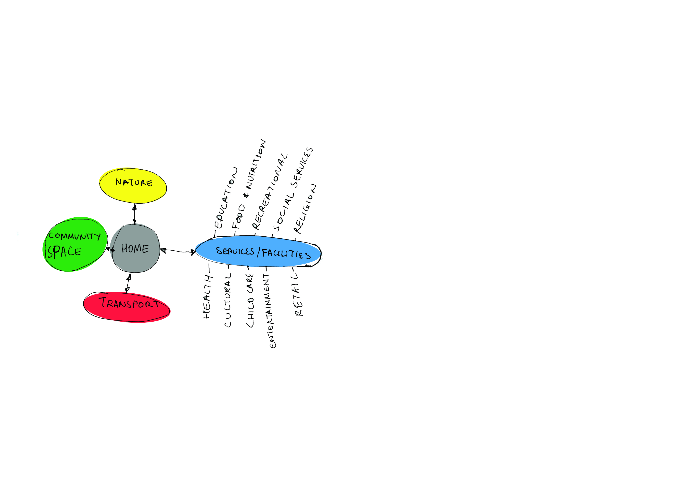
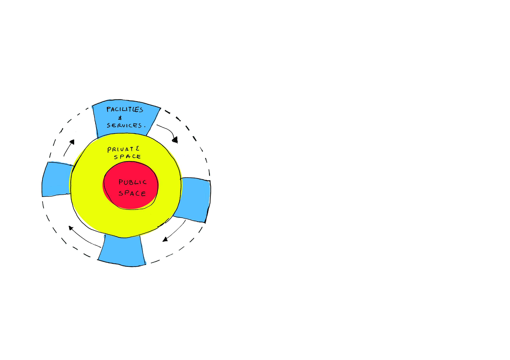
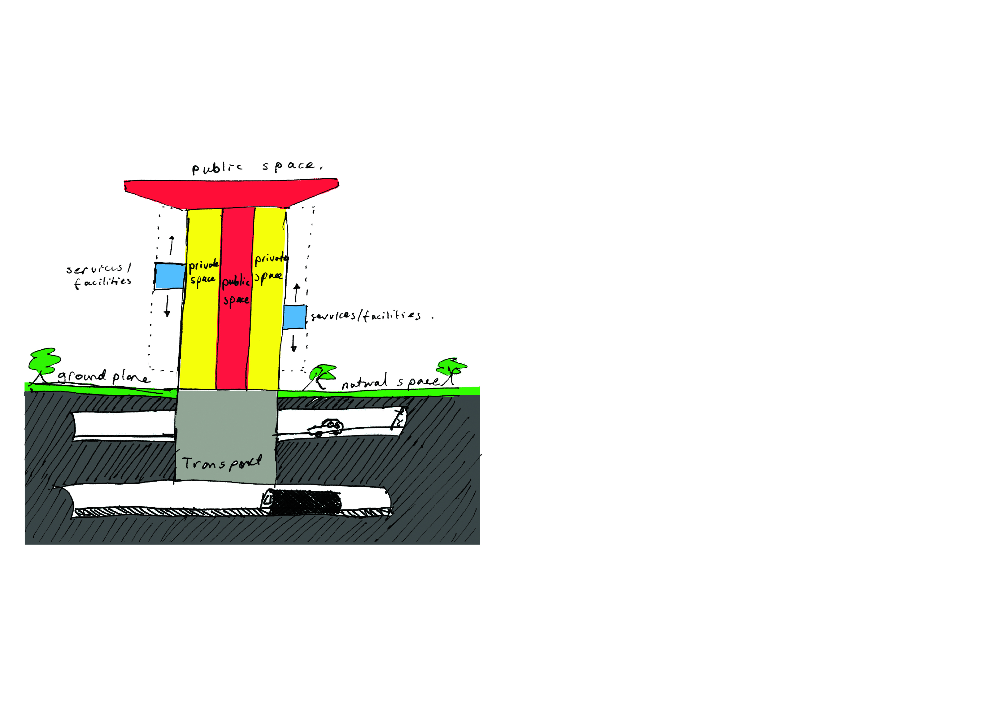

-

This bubble diagram broke down what we considered were the essential elements to a community members quality of life and how these elements connect to each other in our built environment solution. Home was the central point from where a person would access the necessities including: community space, services and facilities, nature, and transport to work. For services and facilities a person would access a variety of services and facilities to satisfy their various needs
-

Our plan, influenced by the Druzhba Sanatorium’s plan, looks to redefine a community into several key areas in our built form. Our plan is formed by 2 components a Core which is surrounded by Pods. The Core, is sectioned into the Inner-core which features public space, featuring circulation and communal space, and an Outer-core, in the form of private space, living quarters for the residents of the community. The core is then surrounded by a ring of pods, which are able to move around the main core. These pods feature our facilities and services, and through the movement of the pods, they are able to reposition themselves around the Core, depending on community member needs. This in essence brings all the services a person may need straight to their doorstep.
-

The section, shows how a suburbs horizontal footprint has been reduced, with the community located in our ‘Tree of Life.’ This section shows how public space and private space are divided in section, as well as the movements of the facilities and services between different levels. Further reinforcing the idea of an Inner and Outer core surrounded by Pods. The section also shows how space for transport has been repositioned underground, leaving the ground plane free as natural space. Finally the top level of our built structure is an open rooftop garden, allowing rainwater to be collected for the community.